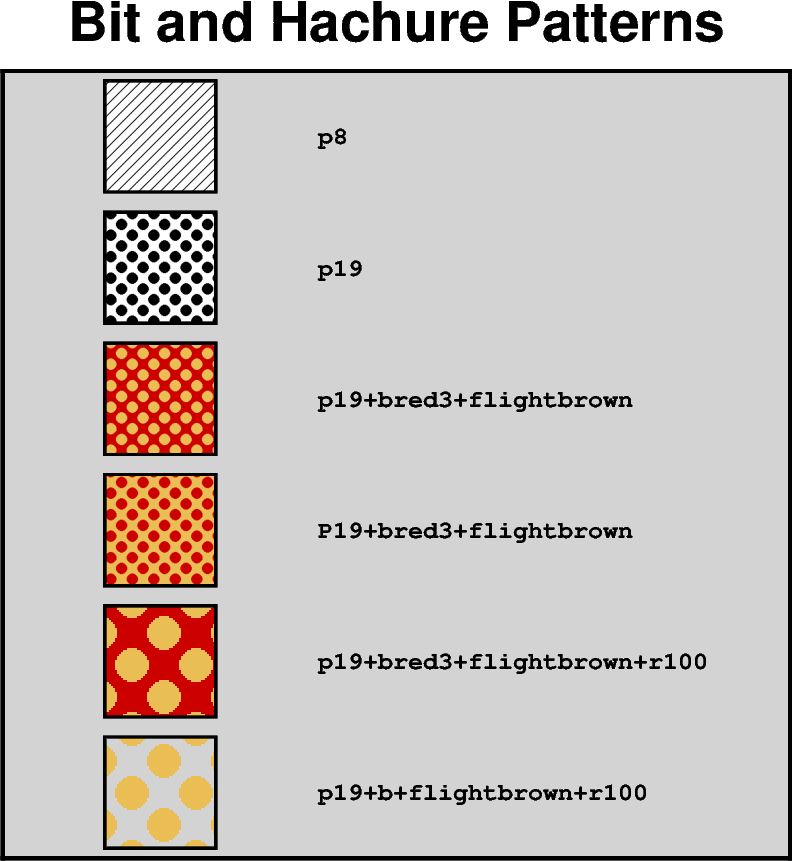

Note
Go to the end to download the full example code
Bit and hachure patterns
PyGMT allows using bit or hachure patterns via the fill parameter
or similar parameters:
pygmt.Figure.coast: Land and water masses vialandandwater, respectivelypygmt.Figure.histogram: Histogram bars viafillpygmt.Figure.meca: Focal mechanisms viacompressionfillandextensionfillpygmt.Figure.plot: Symbols and polygons viafillpygmt.Figure.rose: Histogram sectors viafillpygmt.Figure.solar: Day-light terminators viafillpygmt.Figure.ternary: Symbols viafillpygmt.Figure.velo: Uncertainty wedges and velocity error ellipses viauncertaintyfillpygmt.Figure.wiggle: Anomalies viafillpositiveandfillnegative
The required argument has the following form:
P|ppattern[+bcolor][+fcolor][+rdpi]
pattern can either be a number in the range 1-90 or the name of a 1-, 8-, or 24-bit image raster file. The former will result in one of the 90 predefined 64 x 64 bit-patterns provided by GMT; an overview can by found at https://docs.generic-mapping-tools.org/6.5/reference/predefined-patterns.html. The latter allows the user to create customized, repeating images using image raster files. By specifying upper case P instead of p the image will be bit-reversed, i.e., white and black areas will be interchanged (only applies to 1-bit images or predefined bit-image patterns). For these patterns and other 1-bit images one may specify alternative background and foreground colors (by appending +bcolor and/or +fcolor) that will replace the default white and black pixels, respectively. Excluding color from a fore- or background specification yields a transparent image where only the back- or foreground pixels will be painted. The +rdpi modifier sets the resolution in dpi.
import pygmt
y = 11
fig = pygmt.Figure()
fig.basemap(
region=[0, 10, 0, 12],
projection="X10c",
frame="rlbt+glightgray+tBit and Hachure Patterns",
)
# To use a pattern as fill append "p" and the number of the desired
# pattern. By default, the pattern is plotted in black and white
# with a resolution of 300 dpi
for pattern in [
# Plot a hachted pattern via pattern number 8
"p8",
# Plot a dotted pattern via pattern number 19
"p19",
# Set the background color ("+b") to "red3"
# and the foreground color ("+f") to "lightgray"
"p19+bred3+flightbrown",
# Invert the pattern by using a capitalized "P"
"P19+bred3+flightbrown",
# Change the resolution ("+r") to 100 dpi
"p19+bred3+flightbrown+r100",
# Make the background transparent by not giving a color after "+b";
# works analogous for the foreground
"p19+b+flightbrown+r100",
]:
# Plot a square with the pattern as fill
fig.plot(
x=2,
y=y,
style="s2c", # square with a width of 2 centimeters
pen="1p,black", # 1 point thick, black outline
fill=pattern,
)
# Add a description of the pattern
fig.text(
x=4,
y=y,
text=pattern,
font="Courier-Bold",
justify="ML", # justification of the text is Middle Left
)
y -= 2
fig.show()
Total running time of the script: (0 minutes 0.181 seconds)